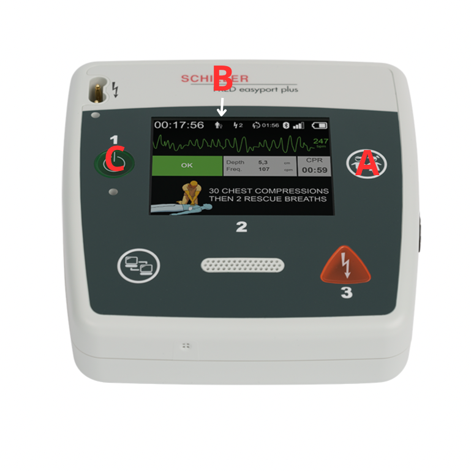

Daglig tillsyn
För att säkerställa att FRED easyport plus är redo att användas vid en nödsituation krävs en enkel, daglig kontroll. Tillsynen tar bara någon minut men kan vara livsavgörande.
- Grön statuslampa: (C) Kontrollera att RTU-lampan lyser – detta visar att enheten är redo för användning.
- Elektroder: Kontrollera att elektroder finns på plats, minst tre förpackningar,och att utgångsdatum inte har passerat.
- Extra batteri: Kontrollera att det finns ett extra batteri tillgängligt och att det är laddat. Detta görs genom att trycka på testknappen på batteriet. Om batteriet behöver laddning. Byt ut det mot ett laddat.
- Laddare och extra batteri finns i förrådet i Norrtälje
- Skick: Kontrollera att apparaten är hel, ren och fri från synliga skador.
- Tillbehör: Säkerställ att sax, rakhyvel finns på sin plats i väskan.
